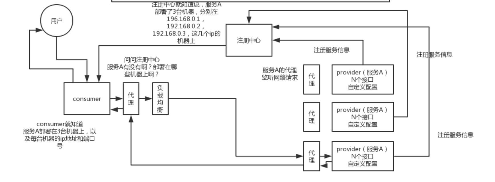

<!DOCTYPE html>


<html lang="zh-CN" >


<head>
  <meta charset="utf-8" />
    
  <meta name="viewport" content="width=device-width, initial-scale=1, maximum-scale=1" />
  <title>
     anzhen.tech
  </title>
  <meta name="generator" content="hexo-theme-yilia-plus">
  
  <link rel="shortcut icon" href="/favicon.ico" />
  
  
<link rel="stylesheet" href="/dist/main.css">

  
  <script src="https://cdn.jsdelivr.net/npm/pace-js@1.0.2/pace.min.js"></script>
  
  

  

<link rel="alternate" href="/atom.xml" title="anzhen.tech" type="application/atom+xml">
</head>

</html>

<body>
  <div id="app">
    <main class="content on">
      <section class="outer">
  <article id="page-" class="article article-type-page" itemscope
  itemprop="blogPost" data-scroll-reveal>

  <div class="article-inner">
    

    

    

    
    <div class="article-entry" itemprop="articleBody">
      
      

      
      <h1 id="Dubbo"><a href="#Dubbo" class="headerlink" title="Dubbo"></a>Dubbo</h1><ol>
<li><p>Dubbo 有几种配置方式？</p>
<ul>
<li>XML 配置</li>
<li>注解配置</li>
<li>Java API 配置</li>
<li>属性配置</li>
</ul>
</li>
<li><p>Dubbo 如何和 Spring Boot 进行集成？</p>
<ul>
<li>官方提供提供了集成库 dubbo-spring-boot</li>
</ul>
</li>
<li><p>Dubbo 框架的分层设计<br> </p>
<ul>
<li>总体分成 Business、RPC、Remoting 三大层<ul>
<li>Service 业务层：业务代码的接口与实现。我们实际使用 Dubbo 的业务层级。接口层，给服务提供者和消费者来实现的。</li>
<li>RPC层：<ul>
<li>config 配置层：主要是对 Dubbo 进行各种配置的。</li>
<li>proxy 服务代理层：服务代理层，无论是 consumer 还是 provider，Dubbo 都会给你生成代理，代理之间进行网络通信。（ 对比Spring Cloud 体系，可以类比成 Feign 对于 consumer ，Spring MVC 对于 provider 。）</li>
<li>registry 注册中心层：服务注册层，负责服务的注册与发现。（对比 Spring Cloud 体系，可以类比成 Eureka Client ）</li>
<li>cluster 路由层：封装多个服务提供者的路由以及负载均衡，将多个实例组合成一个服务。（对比Spring Cloud 体系，可以类比成 Ribbon ）</li>
<li>monitor 监控层：对 rpc 接口的调用次数和调用时间进行监控。</li>
</ul>
</li>
<li>Remoting：<ul>
<li>protocol 远程调用层：远程调用层，封装 rpc 调用。</li>
<li>exchange 信息交换层：信息交换层，封装请求响应模式，同步转异步。</li>
<li>transport 网络传输层：抽象 mina 和 netty 为统一接口。</li>
<li>serialize 数据序列化层：可复用的一些工具，扩展接口为 Serialization, ObjectInput, ObjectOutput</li>
</ul>
</li>
</ul>
</li>
</ul>
</li>
<li><p>Dubbo 调用流程<br> <br></p>
<ul>
<li>Provider<ul>
<li>第 0 步，start 启动服务。</li>
<li>第 1 步，register 注册服务到注册中心。</li>
</ul>
</li>
<li>Consumer<ul>
<li>第 2 步，subscribe 向注册中心订阅服务。<ul>
<li>注意，只订阅使用到的服务。</li>
<li>再注意，首次会拉取订阅的服务列表，缓存在本地。</li>
<li>【异步】第 3 步，notify 当服务发生变化时，获取最新的服务列表，更新本地缓存。</li>
</ul>
</li>
</ul>
</li>
<li>invoke 调用<ul>
<li>Consumer 直接发起对 Provider 的调用，无需经过注册中心。而对多个 Provider 的负载均衡，Consumer 通过 cluster 组件实现。</li>
</ul>
</li>
<li>count 监控<ul>
<li>【异步】Consumer 和 Provider 都异步通知监控中心。</li>
</ul>
</li>
</ul>
</li>
<li><p>Dubbo 调用是同步的吗？</p>
<ul>
<li>默认情况下，调用是同步的方式。</li>
</ul>
</li>
<li><p>谈谈对 Dubbo 的异常处理机制？</p>
<ul>
<li>dubbo的异常处理类是com.alibaba.dubbo.rpc.filter.ExceptionFilter 类,源码这里就不贴了.归纳下对异常的处理分为下面几类:<ul>
<li>1)如果provider实现了GenericService接口,直接抛出</li>
<li>2)如果是checked异常，直接抛出</li>
<li>3)在方法签名上有声明，直接抛出</li>
<li>4)异常类和接口类在同一jar包里，直接抛出</li>
<li>5)是JDK自带的异常，直接抛出</li>
<li>6)是Dubbo本身的异常，直接抛出</li>
<li>7)否则，包装成RuntimeException抛给客户端（防止客户端反序列化失败.前面几种情况都能保证反序列化正常.）</li>
</ul>
</li>
<li><a href="https://blog.csdn.net/qq315737546/article/details/53915067" target="_blank" rel="noopener">dubbo异常处理</a></li>
</ul>
</li>
<li><p>Dubbo 如何做参数校验？</p>
<ul>
<li>参数校验功能，通过参数校验过滤器 ValidationFilter 来实现。</li>
<li>ValidationFilter 在 Dubbo Provider 和 Consumer 都可生效。<ul>
<li>如果我们将校验注解写在 Service 接口的方法上，那么 Consumer 在本地就会校验。如果校验不通过，直接抛出校验失败的异常，不会发起 Dubbo 调用。</li>
<li>如果我们将校验注解写在 Service 实现的方法上，那么 Consumer 在本地不会校验，而是由 Provider 校验。</li>
</ul>
</li>
</ul>
</li>
<li><p>Dubbo 可以对调用结果进行缓存吗?</p>
<ul>
<li>Dubbo 通过 CacheFilter 过滤器，提供结果缓存的功能，且既可以适用于 Consumer 也可以适用于 Provider 。</li>
<li>通过结果缓存，用于加速热门数据的访问速度，Dubbo 提供声明式缓存，以减少用户加缓存的工作量。</li>
<li>Dubbo 目前提供三种实现：<ul>
<li>lru ：基于最近最少使用原则删除多余缓存，保持最热的数据被缓存。</li>
<li>threadlocal ：当前线程缓存，比如一个页面渲染，用到很多 portal，每个 portal 都要去查用户信息，通过线程缓存，可以减少这种多余访问。</li>
<li>jcache ：与 JSR107 集成，可以桥接各种缓存实现。</li>
</ul>
</li>
</ul>
</li>
<li><p>注册中心挂了还可以通信吗？</p>
<ul>
<li>可以。对于正在运行的 Consumer 调用 Provider 是不需要经过注册中心，所以不受影响。并且，Consumer 进程中，内存已经缓存了 Provider 列表。</li>
<li>此时 Provider 如果下线呢？<ul>
<li>如果 Provider 是正常关闭，它会主动且直接对和其处于连接中的 Consumer 们，发送一条“我要关闭”了的消息。那么，Consumer 们就不会调用该 Provider ，而调用其它的 Provider 。</li>
<li>因为 Consumer 也会持久化 Provider 列表到本地文件。所以，此处如果 Consumer 重启，依然能够通过本地缓存的文件，获得到 Provider 列表。</li>
<li>一般情况下，注册中心是一个集群，如果一个节点挂了，Dubbo Consumer 和 Provider 将自动切换到集群的另外一个节点上。</li>
</ul>
</li>
</ul>
</li>
<li><p>Dubbo 在 Zookeeper 存储了哪些信息？</p>
<pre><code></code></pre><ul>
<li>服务提供者启动时: 向 /dubbo/com.foo.BarService/providers 目录下写入自己的 URL 地址</li>
<li>服务消费者启动时: 订阅 /dubbo/com.foo.BarService/providers 目录下的提供者 URL 地址。并向 /dubbo/com.foo.BarService/consumers 目录下写入自己的 URL 地址（服务消费者启动后，不仅仅订阅了 “providers” 分类，也订阅了 “routes” “configurations” 分类。）</li>
<li>监控中心启动时: 订阅 /dubbo/com.foo.BarService 目录下的所有提供者和消费者 URL 地址。</li>
<li>Zookeeper 的节点层级，自上而下是：<ul>
<li>Root 层：根目录，可通过 &lt;dubbo:registry group=”dubbo” /&gt; 的 “group” 设置 Zookeeper 的根节点，缺省使用 “dubbo” 。</li>
<li>Service 层：服务接口全名。</li>
<li>Type 层：分类。目前除了我们在图中看到的 “providers”( 服务提供者列表 ) “consumers”( 服务消费者列表 ) 外，还有 “routes”( 路由规则列表 ) 和 “configurations”( 配置规则列表 )。</li>
<li>URL 层：URL ，根据不同 Type 目录，下面可以是服务提供者 URL 、服务消费者 URL 、路由规则 URL 、配置规则 URL 。</li>
<li>实际上 URL 上带有 “category” 参数，已经能判断每个 URL 的分类，但是 Zookeeper 是基于节点目录订阅的，所以增加了 Type 层。</li>
</ul>
</li>
</ul>
</li>
<li><p>Dubbo Provider 如何实现优雅停机？</p>
<ul>
<li>Dubbo 是通过 JDK 的 ShutdownHook 来完成优雅停机的，所以如果用户使用 kill -9 PID 等强制关闭指令，是不会执行优雅停机的，只有通过 kill PID 时，才会执行。</li>
<li>因为大多数情况下，Dubbo 的声明周期是交给 Spring 进行管理，所以在最新的 Dubbo 版本中，增加了对 Spring 关闭事件的监听，从而关闭 Dubbo 服务</li>
<li>服务提供方的优雅停机过程<ul>
<li>首先，从注册中心中取消注册自己，从而使消费者不要再拉取到它。</li>
<li>然后，sleep 10 秒( 可配 )，等到服务消费，接收到注册中心通知到该服务提供者已经下线，加大了在不重试情况下优雅停机的成功率。</li>
<li>之后，广播 READONLY 事件给所有 Consumer 们，告诉它们不要在调用我了！！！如果此处注册中心挂掉的情况，依然能达到告诉 Consumer ，我要下线了的功能。</li>
<li>再之后，sleep 10 毫秒，保证 Consumer 们，尽可能接收到该消息。</li>
<li>再再之后，先标记为不接收新请求，新请求过来时直接报错，让客户端重试其它机器。</li>
<li>再再再之后，关闭心跳线程。</li>
<li>最后，检测线程池中的线程是否正在运行，如果有，等待所有线程执行完成，除非超时，则强制关闭。</li>
<li>最最后，关闭服务器。</li>
</ul>
</li>
<li>服务消费方的优雅停机过程<ul>
<li>停止时，不再发起新的调用请求，所有新的调用在客户端即报错。</li>
<li>然后，检测有没有请求的响应还没有返回，等待响应返回，除非超时，则强制关闭。</li>
</ul>
</li>
</ul>
</li>
<li><p>Dubbo Provider 异步关闭时，如何从注册中心下线？</p>
<ul>
<li>服务提供者，注册到 Zookeeper 上时，创建的是 EPHEMERAL 临时节点。所以在服务提供者异常关闭时，等待 Zookeeper 会话超时，那么该临时节点就会自动删除。</li>
</ul>
</li>
<li><p>Dubbo Consumer 只能调用从注册中心获取的 Provider 么？</p>
<ul>
<li>不是，Consumer 可以强制直连 Provider 。</li>
<li>在开发及测试环境下，经常需要绕过注册中心，只测试指定服务提供者，这时候可能需要点对点直连，点对点直连方式，将以服务接口为单位，忽略注册中心的提供者列表，A 接口配置点对点，不影响 B 接口从注册中心获取列表。</li>
<li>另外，直连 Dubbo Provider 时，如果要 Debug 调试 Dubbo Provider ，可以通过配置，禁用该 Provider 注册到注册中心。否则，会被其它 Consumer 调用到</li>
</ul>
</li>
<li><p>Dubbo 支持哪些通信协议？对应【protocol 远程调用层】。</p>
<ul>
<li>dubbo://</li>
<li>rest://</li>
<li>rmi://</li>
<li>webservice://</li>
<li>hessian://</li>
<li>thrift://</li>
<li>memcached://</li>
<li>redis://</li>
<li>http://</li>
</ul>
</li>
<li><p>什么是本地暴露和远程暴露，他们的区别？</p>
<ul>
<li>远程暴露:每次 Consumer 调用 Provider 都是跨进程，需要进行网络通信。</li>
<li>本地暴露:使用了 injvm:// 协议，是一个伪协议，它不开启端口，不发起远程调用，只在 JVM 内直接关联，但执行 Dubbo 的 Filter 链。</li>
</ul>
</li>
<li><p>Dubbo 使用什么通信框架？对应【transport 网络传输层】。</p>
<ul>
<li>Netty3</li>
<li>Netty4</li>
<li>Mina</li>
<li>Grizzly</li>
<li>在 Dubbo 的最新版本，默认使用 Netty4 的版本</li>
</ul>
</li>
<li><p>Dubbo 支持哪些序列化方式？对应【serialize 数据序列化层】。</p>
<ul>
<li>Dubbo 目前支付如下 7 种序列化方式：<ul>
<li>【重要】Hessian2 ：基于 Hessian 实现的序列化拓展。dubbo:// 协议的默认序列化方案。<ul>
<li>Hessian 除了是 Web 服务，也提供了其序列化实现，因此 Dubbo 基于它实现了序列化拓展。</li>
<li>另外，Dubbo 维护了自己的 hessian-lite ，对 Hessian 2 的 序列化 部分的精简、改进、BugFix 。</li>
</ul>
</li>
<li>Dubbo ：Dubbo 自己实现的序列化拓展。</li>
<li>Kryo ：基于 Kryo 实现的序列化拓展。</li>
<li>FST ：基于 FST 实现的序列化拓展。</li>
<li>JSON ：基于 Fastjson 实现的序列化拓展。</li>
<li>NativeJava ：基于 Java 原生的序列化拓展。</li>
<li>CompactedJava ：在 NativeJava 的基础上，实现了对 ClassDescriptor 的处理。</li>
</ul>
</li>
</ul>
</li>
<li><p>Dubbo 有哪些负载均衡策略？对应【cluster 路由层】的 LoadBalance 组件。</p>
<ul>
<li>Random LoadBalance <ul>
<li>随机，按权重设置随机概率。</li>
<li>在一个截面上碰撞的概率高，但调用量越大分布越均匀，而且按概率使用权重后也比较均匀，有利于动态调整提供者权重。</li>
</ul>
</li>
<li>RoundRobin LoadBalance<ul>
<li>轮询，按公约后的权重设置轮询比率。</li>
<li>存在慢的提供者累积请求的问题，比如</li>
</ul>
</li>
<li>LeastActive LoadBalance<ul>
<li>最少活跃调用数，相同活跃数的随机，活跃数指调用前后计数差。</li>
<li>使慢的提供者收到更少请求，因为越慢的提供者的调用前后计数差会越大。</li>
</ul>
</li>
<li>ConsistentHash LoadBalance<ul>
<li>一致性 Hash，相同参数的请求总是发到同一提供者。</li>
<li>当某一台提供者挂时，原本发往该提供者的请求，基于虚拟节点，平摊到其它提供者，不会引起剧烈变动。</li>
</ul>
</li>
</ul>
</li>
<li><p>Dubbo 有哪些集群容错策略？对应【cluster 路由层】的 Cluster 组件。</p>
<ul>
<li><p>Consumer 仅仅引用服务 ***-api.jar 包，那么可以获得到需要服务的 XXXService 接口。那么，通过动态创建对应调用 Dubbo 服务的实现类。简化代码如下：</p>
  <figure class="highlight java"><table><tr><td class="gutter"><pre><span class="line">1</span><br><span class="line">2</span><br><span class="line">3</span><br><span class="line">4</span><br><span class="line">5</span><br><span class="line">6</span><br><span class="line">7</span><br><span class="line">8</span><br><span class="line">9</span><br></pre></td><td class="code"><pre><span class="line"><span class="comment">// ProxyFactory.java</span></span><br><span class="line"><span class="comment">/**</span></span><br><span class="line"><span class="comment"> * create proxy.</span></span><br><span class="line"><span class="comment"> * 创建 Proxy ，在引用服务调用。</span></span><br><span class="line"><span class="comment"> * <span class="doctag">@param</span> invoker Invoker 对象</span></span><br><span class="line"><span class="comment"> * <span class="doctag">@return</span> proxy</span></span><br><span class="line"><span class="comment"> */</span></span><br><span class="line"><span class="meta">@Adaptive</span>(&#123;Constants.PROXY_KEY&#125;)</span><br><span class="line">&lt;T&gt; <span class="function">T <span class="title">getProxy</span><span class="params">(Invoker&lt;T&gt; invoker)</span> <span class="keyword">throws</span> RpcException</span>;</span><br></pre></td></tr></table></figure>
<ul>
<li>方法参数 invoker ，实现了调用 Dubbo 服务的逻辑。</li>
<li>返回的 <T> 结果，就是 XXXService 的实现类，而这个实现类，就是通过动态代理的工具类进行生成。</li>
</ul>
</li>
</ul>
</li>
<li><p>Dubbo SPI 的设计思想是什么？</p>
<ul>
<li>？？？？？？？？？？？？？？？？？</li>
</ul>
</li>
<li><p>Dubbo 服务如何监控和管理？</p>
<ul>
<li>Dubbo 管理平台 + 监控平台<ul>
<li>dubbo-monitor 监控平台，基于 Dubbo 的【monitor 监控层】，实现相应的监控数据的收集到监控平台。</li>
<li>dubbo-admin 管理平台，基于注册中心，可以获取到服务相关的信息。</li>
</ul>
</li>
<li>链路追踪<ul>
<li>目前能够实现链路追踪的组件还是比较多的，如下：<ul>
<li>Apache SkyWalking 【推荐】</li>
<li>Zipkin</li>
<li>Cat</li>
<li>PinPoint</li>
</ul>
</li>
</ul>
</li>
</ul>
</li>
<li><p>Dubbo 服务如何做降级？比如说服务 A 调用服务 B，结果服务 B 挂掉了。服务 A 再重试几次调用服务 B，还是不行，那么直接降级，走一个备用的逻辑，给用户返回响应。</p>
<ul>
<li>Dubbo 原生自带的服务降级功能：不能实现现代微服务的熔断器的功能</li>
<li>引入支持服务降级的组件<ul>
<li>目前开源社区常用的有两种组件支持服务降级的功能，分别是：<ul>
<li>Alibaba Sentinel</li>
<li>Netflix Hystrix</li>
</ul>
</li>
</ul>
</li>
</ul>
</li>
<li><p>Dubbo 如何做限流？</p>
<ul>
<li>Dubbo 原生自带的限流功能：通过 TpsLimitFilter 实现，仅适用于服务提供者</li>
<li>引入支持限流的组件：推荐集成 Sentinel 组件。</li>
</ul>
</li>
<li><p>Dubbo 的失败重试是什么？</p>
<ul>
<li><p>所谓失败重试，就是 consumer 调用 provider 要是失败了，比如抛异常了，此时应该是可以重试的，或者调用超时了也可以重试。</p>
</li>
<li><p>实际场景下，我们一般会禁用掉重试。因为，因为超时后重试会有问题，超时你不知道是成功还是失败。例如，可能会导致两次扣款的问题。</p>
</li>
<li><p>所以，我们一般使用 failfast 集群容错策略，而不是 failover 策略。配置如下：</p>
  <figure class="highlight xml"><table><tr><td class="gutter"><pre><span class="line">1</span><br></pre></td><td class="code"><pre><span class="line"><span class="tag">&lt;<span class="name">dubbo:service</span> <span class="attr">cluster</span>=<span class="string">"failfast"</span> <span class="attr">timeout</span>=<span class="string">"2000"</span> /&gt;</span></span><br></pre></td></tr></table></figure></li>
<li><p>一定一定一定要配置适合自己业务的超时时间。</p>
</li>
<li><p>当然，可以将操作分成读和写两种，前者支持重试，后者不支持重试。因为，读操作天然具有幂等性。</p>
</li>
</ul>
</li>
<li><p>Dubbo 支持哪些注册中心？</p>
<ul>
<li>【默认】Zookeeper </li>
<li>Redis </li>
<li>Multicast</li>
<li>Simple 注册中心</li>
<li>Nacos </li>
</ul>
</li>
<li><p>Dubbo 如何升级接口？</p>
<ul>
<li>当一个接口实现，出现不兼容升级时，可以用版本号过渡，版本号不同的服务相互间不引用。</li>
<li>可以按照以下的步骤进行版本迁移：<ul>
<li>在低压力时间段，先升级一半提供者为新版本。</li>
<li>再将所有消费者升级为新版本。</li>
<li>然后将剩下的一半提供者升级为新版本。</li>
</ul>
</li>
</ul>
</li>
<li><p>Dubbo 在安全机制方面是如何解决的？</p>
<pre><code></code></pre><ul>
<li>通过令牌验证在注册中心控制权限，以决定要不要下发令牌给消费者，可以防止消费者绕过注册中心访问提供者。</li>
<li>另外通过注册中心可灵活改变授权方式，而不需修改或升级提供者。</li>
</ul>
</li>
<li><p>Dubbo 需要 Web 容器吗？Dubbo 服务启动是否需要启动类似 Tomcat、Jetty 等服务器。</p>
<ul>
<li>这个答案可以是，也可以是不是。为什么呢？根据协议的不同，Provider 会启动不同的服务器。<ul>
<li>在使用 dubbo:// 协议时，答案是否，因为 Provider 启动 Netty、Mina 等 NIO Server 。</li>
<li>在使用 rest:// 协议时，答案是是，Provider 启动 Tomcat、Jetty 等 HTTP 服务器，或者也可以使用 Netty 封装的 HTTP 服务器。</li>
<li>在使用 hessian:// 协议时，答案是是，Provider 启动 Jetty、Tomcat 等 HTTP 服务器。</li>
</ul>
</li>
</ul>
</li>
<li><p>为什么要将系统进行拆分？SOA?微服务?</p>
<ul>
<li>维护成本</li>
<li>分布式挑战</li>
</ul>
</li>
<li><p>Dubbo 如何集成配置中心？</p>
<ul>
<li>对于使用了 Dubbo 的系统，配置分成两类：<ul>
<li>① Dubbo 自身配置。如：Dubbo 请求超时，Dubbo 重试次数等等。</li>
<li>② 非 Dubbo 自身配置<ul>
<li>基建配置，例如：数据库、Redis 等配置。</li>
<li>业务配置，例如：订单超时时间，下单频率等等配置。</li>
</ul>
</li>
</ul>
</li>
</ul>
</li>
<li><p>Dubbo 如何实现分布式事务？</p>
<ul>
<li>？？？？？？？？？？？？？？？？？？</li>
</ul>
</li>
<li><p>Spring Cloud 与 Dubbo 怎么选择？</p>
<ul>
<li>？？？？？？？？？？？？</li>
</ul>
</li>
<li><p>如何自己设计一个类似 Dubbo 的 RPC 框架？</p>
<ul>
<li>服务提供者在注册中心服务发布</li>
<li>消费者去注册中心拿对应的服务信息</li>
<li>基于动态代理发起请求</li>
<li>负载均衡算法</li>
<li>通信方式，序列化方式</li>
<li>服务提供者生成一个动态代理，监听某个网络端口，然后代理本地的服务代码。接收到请求的时候，就调用对应的服务代码</li>
</ul>
</li>
</ol>

      
      <!-- reward -->
      
      <div id="reward-btn">
        打赏
      </div>
      
    </div>
    
    
      <!-- copyright -->
      
        <div class="declare">
          <ul class="post-copyright">
            <li>
              <i class="ri-copyright-line"></i>
              <strong>版权声明： </strong s>
              本博客所有文章除特别声明外，均采用 <a href="https://www.apache.org/licenses/LICENSE-2.0.html" rel="external nofollow"
                target="_blank">Apache License 2.0</a> 许可协议。转载请注明出处！
            </li>
          </ul>
        </div>
        
    <footer class="article-footer">
      
          
<div class="share-btn">
      <span class="share-sns share-outer">
        <i class="ri-share-forward-line"></i>
        分享
      </span>
      <div class="share-wrap">
        <i class="arrow"></i>
        <div class="share-icons">
          
          <a class="weibo share-sns" href="javascript:;" data-type="weibo">
            <i class="ri-weibo-fill"></i>
          </a>
          <a class="weixin share-sns wxFab" href="javascript:;" data-type="weixin">
            <i class="ri-wechat-fill"></i>
          </a>
          <a class="qq share-sns" href="javascript:;" data-type="qq">
            <i class="ri-qq-fill"></i>
          </a>
          <a class="douban share-sns" href="javascript:;" data-type="douban">
            <i class="ri-douban-line"></i>
          </a>
          <!-- <a class="qzone share-sns" href="javascript:;" data-type="qzone">
            <i class="icon icon-qzone"></i>
          </a> -->
          
          <a class="facebook share-sns" href="javascript:;" data-type="facebook">
            <i class="ri-facebook-circle-fill"></i>
          </a>
          <a class="twitter share-sns" href="javascript:;" data-type="twitter">
            <i class="ri-twitter-fill"></i>
          </a>
          <a class="google share-sns" href="javascript:;" data-type="google">
            <i class="ri-google-fill"></i>
          </a>
        </div>
      </div>
</div>

<div class="wx-share-modal">
    <a class="modal-close" href="javascript:;"><i class="ri-close-circle-line"></i></a>
    <p>扫一扫，分享到微信</p>
    <div class="wx-qrcode">
      
    </div>
</div>

<div id="share-mask"></div>
      
      

    </footer>

  </div>

  
  

  

  
  
<!-- valine评论 -->
<div id="vcomments-box">
    <div id="vcomments">
    </div>
</div>
<script src="//cdn1.lncld.net/static/js/3.0.4/av-min.js"></script>
<script src='https://cdn.jsdelivr.net/npm/valine@1.3.10/dist/Valine.min.js'></script>
<script>
    new Valine({
        el: '#vcomments',
        app_id: '',
        app_key: '',
        path: window.location.pathname,
        notify: 'false',
        verify: 'false',
        avatar: 'mp',
        placeholder: '给我的文章加点评论吧~',
        recordIP: true
    });
    const infoEle = document.querySelector('#vcomments .info');
    if (infoEle && infoEle.childNodes && infoEle.childNodes.length > 0) {
        infoEle.childNodes.forEach(function (item) {
            item.parentNode.removeChild(item);
        });
    }
</script>
<style>
    #vcomments-box {
        padding: 5px 30px;
    }

    @media screen and (max-width: 800px) {
        #vcomments-box {
            padding: 5px 0px;
        }
    }

    #vcomments-box #vcomments {
        background-color: #fff;
    }

    .v .vlist .vcard .vh {
        padding-right: 20px;
    }

    .v .vlist .vcard {
        padding-left: 10px;
    }
</style>

  

  

</article>
</section>
      <footer class="footer">
  <div class="outer">
    <ul class="list-inline">
      <li>
        &copy;
        2015-2020
        Anzhen
      </li>
      <li>
        
        Powered by
        
        
        <a href="https://hexo.io" target="_blank">Hexo</a> Theme <a href="https://github.com/Shen-Yu/hexo-theme-ayer" target="_blank">Ayer</a>
        
      </li>
    </ul>
    <ul class="list-inline">
      <li>
        
        
        <span>
  <i>PV:<span id="busuanzi_value_page_pv"></span></i>
  <i>UV:<span id="busuanzi_value_site_uv"></span></i>
</span>
        
      </li>
      
      <li>
        <!-- cnzz统计 -->
        
        <script type="text/javascript" src='https://s9.cnzz.com/z_stat.php?id=1278069914&amp;web_id=1278069914'></script>
        
      </li>
    </ul>
  </div>
</footer>
      <div class="float_btns">
        <div class="totop" id="totop">
  <i class="ri-arrow-up-line"></i>
</div>

<div class="todark" id="todark">
  <i class="ri-moon-line"></i>
</div>

      </div>
    </main>
    <aside class="sidebar on">
      <button class="navbar-toggle"></button>
<nav class="navbar">
  
  <div class="logo">
    <a href="/"></a>
  </div>
  
  <ul class="nav nav-main">
    
    <li class="nav-item">
      <a class="nav-item-link" href="/">主页</a>
    </li>
    
    <li class="nav-item">
      <a class="nav-item-link" href="/archives">归档</a>
    </li>
    
    <li class="nav-item">
      <a class="nav-item-link" href="/categories">分类</a>
    </li>
    
    <li class="nav-item">
      <a class="nav-item-link" href="/tags">标签</a>
    </li>
    
    <li class="nav-item">
      <a class="nav-item-link" href="/interview">面试</a>
    </li>
    
    <li class="nav-item">
      <a class="nav-item-link" href="/source-code">源码</a>
    </li>
    
    <li class="nav-item">
      <a class="nav-item-link" href="/adg">算法</a>
    </li>
    
    <li class="nav-item">
      <a class="nav-item-link" href="/2019/about">关于我</a>
    </li>
    
  </ul>
</nav>
<nav class="navbar navbar-bottom">
  <ul class="nav">
    <li class="nav-item">
      
      <a class="nav-item-link nav-item-search"  title="搜索">
        <i class="ri-search-line"></i>
      </a>
      
      
      <a class="nav-item-link" target="_blank" href="/atom.xml" title="RSS Feed">
        <i class="ri-rss-line"></i>
      </a>
      
    </li>
  </ul>
</nav>
<div class="search-form-wrap">
  <div class="local-search local-search-plugin">
  <input type="search" id="local-search-input" class="local-search-input" placeholder="Search...">
  <div id="local-search-result" class="local-search-result"></div>
</div>
</div>
    </aside>
    <script>
      if (window.matchMedia("(max-width: 768px)").matches) {
        document.querySelector('.content').classList.remove('on');
        document.querySelector('.sidebar').classList.remove('on');
      }
    </script>
    <div id="mask"></div>

<!-- #reward -->
<div id="reward">
  <span class="close"><i class="ri-close-line"></i></span>
  <p class="reward-p"><i class="ri-cup-line"></i>请我喝杯咖啡吧~</p>
  <div class="reward-box">
    
    <div class="reward-item">
      
      <span class="reward-type">支付宝</span>
    </div>
    
    
    <div class="reward-item">
      
      <span class="reward-type">微信</span>
    </div>
    
  </div>
</div>
    
<script src="/js/jquery-2.0.3.min.js"></script>


<script src="/js/lazyload.min.js"></script>


<script>
  try {
    var typed = new Typed("#subtitle", {
      strings: ['越努力，越美好', '', ''],
      startDelay: 0,
      typeSpeed: 200,
      loop: true,
      backSpeed: 100,
      showCursor: true
    });
  } catch (err) {
  }

</script>


<script src="https://cdn.jsdelivr.net/npm/jquery-modal@0.9.2/jquery.modal.min.js"></script>
<link rel="stylesheet" href="https://cdn.jsdelivr.net/npm/jquery-modal@0.9.2/jquery.modal.min.css">
<script src="https://cdn.jsdelivr.net/npm/justifiedGallery@3.7.0/dist/js/jquery.justifiedGallery.min.js"></script>

<script src="/dist/main.js"></script>


<!-- Root element of PhotoSwipe. Must have class pswp. -->
<div class="pswp" tabindex="-1" role="dialog" aria-hidden="true">

    <!-- Background of PhotoSwipe. 
         It's a separate element as animating opacity is faster than rgba(). -->
    <div class="pswp__bg"></div>

    <!-- Slides wrapper with overflow:hidden. -->
    <div class="pswp__scroll-wrap">

        <!-- Container that holds slides. 
            PhotoSwipe keeps only 3 of them in the DOM to save memory.
            Don't modify these 3 pswp__item elements, data is added later on. -->
        <div class="pswp__container">
            <div class="pswp__item"></div>
            <div class="pswp__item"></div>
            <div class="pswp__item"></div>
        </div>

        <!-- Default (PhotoSwipeUI_Default) interface on top of sliding area. Can be changed. -->
        <div class="pswp__ui pswp__ui--hidden">

            <div class="pswp__top-bar">

                <!--  Controls are self-explanatory. Order can be changed. -->

                <div class="pswp__counter"></div>

                <button class="pswp__button pswp__button--close" title="Close (Esc)"></button>

                <button class="pswp__button pswp__button--share" style="display:none" title="Share"></button>

                <button class="pswp__button pswp__button--fs" title="Toggle fullscreen"></button>

                <button class="pswp__button pswp__button--zoom" title="Zoom in/out"></button>

                <!-- Preloader demo http://codepen.io/dimsemenov/pen/yyBWoR -->
                <!-- element will get class pswp__preloader--active when preloader is running -->
                <div class="pswp__preloader">
                    <div class="pswp__preloader__icn">
                        <div class="pswp__preloader__cut">
                            <div class="pswp__preloader__donut"></div>
                        </div>
                    </div>
                </div>
            </div>

            <div class="pswp__share-modal pswp__share-modal--hidden pswp__single-tap">
                <div class="pswp__share-tooltip"></div>
            </div>

            <button class="pswp__button pswp__button--arrow--left" title="Previous (arrow left)">
            </button>

            <button class="pswp__button pswp__button--arrow--right" title="Next (arrow right)">
            </button>

            <div class="pswp__caption">
                <div class="pswp__caption__center"></div>
            </div>

        </div>

    </div>

</div>

<link rel="stylesheet" href="https://cdn.jsdelivr.net/npm/photoswipe@4.1.3/dist/photoswipe.min.css">
<link rel="stylesheet" href="https://cdn.jsdelivr.net/npm/photoswipe@4.1.3/dist/default-skin/default-skin.min.css">
<script src="https://cdn.jsdelivr.net/npm/photoswipe@4.1.3/dist/photoswipe.min.js"></script>
<script src="https://cdn.jsdelivr.net/npm/photoswipe@4.1.3/dist/photoswipe-ui-default.min.js"></script>

<script>
    function viewer_init() {
        let pswpElement = document.querySelectorAll('.pswp')[0];
        let $imgArr = document.querySelectorAll(('.article-entry img:not(.reward-img)'))

        $imgArr.forEach(($em, i) => {
            $em.onclick = () => {
                // slider展开状态
                // todo: 这样不好，后面改成状态
                if (document.querySelector('.left-col.show')) return
                let items = []
                $imgArr.forEach(($em2, i2) => {
                    let img = $em2.getAttribute('data-idx', i2)
                    let src = $em2.getAttribute('data-target') || $em2.getAttribute('src')
                    let title = $em2.getAttribute('alt')
                    // 获得原图尺寸
                    const image = new Image()
                    image.src = src
                    items.push({
                        src: src,
                        w: image.width || $em2.width,
                        h: image.height || $em2.height,
                        title: title
                    })
                })
                var gallery = new PhotoSwipe(pswpElement, PhotoSwipeUI_Default, items, {
                    index: parseInt(i)
                });
                gallery.init()
            }
        })
    }
    viewer_init()
</script>


<script src="/js/busuanzi-2.3.pure.min.js"></script>


<script type="text/javascript" src="https://js.users.51.la/20544303.js"></script>

    
  </div>
</body>

</html>